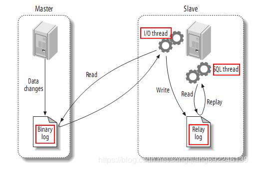

MySQL高可用架构中，主库复制是非常常见的一种。当主库宕机后，可以提升一个从库作为新的主库，保证服务可用性；同时可以通过扩展从库，提高整个集群的QPS。在主从复制架构下，MySQL通过binlog来实现主从数据的一致性。

如上图，MySQL主从复制主要有以下步骤
(1) master将改变记录到binary log中
(2) slave io_thread去请求主库的binlog，并将得到的binlog日志写到relay log中
(3) slave sql_thread重做relay log中的事件
除了作为MySQL主从复制的纽带，binlog还有其他的作用。比如：
- 通过mysqlbinlog工具解析binlog文件，来进行Point-in-Time数据库恢复；
- 基于binlog事件，进行数据库的flashback（闪回）（mariadb可以直接使用mysqlbinlog进行flashback）
- Github开源的在线改表工具gh-ost也是通过binlog来实现的
- 还可以通过解析binlog进行增量订阅&消费
binlog如此有用，但是在平日的运维过程中难免遇到一些问题。下面介绍几种binlog相关的错误。
常见问题一
现象：
mysqlbinlog5.5解析mysql5.7 binlog文件出现
ERROR: Error in Log_event::read_log_event(): ‘Sanity check failed’, data_len: 31, event_type: 35ERROR: Could not read entry at offset 123: Error in log format or read error.
原因分析：
mysql5.6等高版本binlog文件增加了新的binlog event，如gtid event等。
mysql5.5版本的mysqlbinlog是识别不了这样的binlog event的。
解决方法：
使用高版本的mysqlbinlog解析低版本的mysql产生的binlog
常见问题二
现象：
正常运行的mysql服务器show slave status出现
Last_SQL_Error:Relay log read failure: Could not parse relay log event entry. The possible reasons are: the master’s binary log is corrupted (you can check this by running ‘mysqlbinlog’ on the binary log), the slave’s relay log is corrupted (you can check this by running ‘mysqlbinlog’ on the relay log), a network problem, or a bug in the master’s or slave’s MySQL code. If you want to check the master’s binary log or slave’s relay log, you will be able to know their names by issuing ‘SHOW SLAVE STATUS’ on this slave.
原因分析：
无法读取relay log 里的条目，可能因为master库的binlog错误，或slave库的中继日志错误，或者网络问题及bug原因。一般是由于网络故障或slave库压力过大，导致relay-log格式错误造成的。
解决方法：
找到当前已经同步的时间点，重新设置主从同步后，就会产生新的中继日志，恢复正常。
从”show slave status\G”的输出中，找到如下信息：
Relay_Master_Log_File: mysql-bin.002540 //slave库已读取的master的binlogExec_Master_Log_Pos: 950583017 //在slave上已经执行的position位置点
停掉slave，以slave已经读取的binlog文件，和已经执行的position为起点，重新设置同步。
1 | mysql>stop slave; |
mysql>stop slave;mysql>change master to master_log_file=mysql-bin.002540’ ,master_log_pos=950583017;mysql>start slave;
常见问题三
现象：
宕机之后恢复show slave status报错：
Last_SQL_Error: Error initializing relay log position: I/O error reading the header from the binary logLast_SQL_Error: Error initializing relay log position: Binlog has bad magic number; It’s not a binary log file that can be used by this version of MySQL
原因分析：
宕机，例如电源故障、主板烧了等，或者非法关机，造成relay-bin文件损坏
解决方法：
同问题二 。
也可以设置relay_log_recovery = 1 。
当slave从库宕机后，如果relay-log发生损坏，导致一部分中继日志没有处理，就自动放弃未执行的relay-log，重新从master上获取日志，完成了中继日志的恢复。
常见问题四
现象：
从库机器宕机重启后change master to时出现
Error (Code 1201): Could not initialize master info structure; more error messages can be found in the MySQL error log
或者
ERROR 1872 (HY000): Slave failed to initialize relay log info structure from the repository
原因分析：
宕机，例如电源故障、主板烧了等，或者非法关机，造成master.info或者realy-log.info文件损坏
解决方法：
slave> reset slave all，
重新change master to
预防措施：
配置文件设置
relay_log_info_repository=table
master_info_repository=table
mysql5.6.5以前的版本mysql.slave_master_info和mysql.slave_relay_log_info的存储引擎是默认为MyISAM的，需要更改为InnoDB的存储引擎
ALTER TABLE mysql.slave_master_info ENGINE=InnoDB;
ALTER TABLE mysql.slave_relay_log_info ENGINE=InnoDB;
mysql.slave_master_info 表将在sync_master_info 个events后被更新 。
mysql.slave_relay_log_info表将在每个事务commit时被更新 。
常见问题五
现象：
主从原来binlog_format都是statement，将主库binlog_format改为row后，从库show slave status出现：
Last_Error: Error executing row event: ‘Cannot execute statement: impossible to write to binary log since statement is in row format and BINLOG_FORMAT = STATEMENT.’
原因分析：
主库binlog_format是row，从库binlog_format是statement时，会出现上面的报错 。
但是主库binlog_format是statement，从库binlog_format是row；
或者主库binlog_format是row，从库binlog_format是mixed就不会报错。
If the your SQL thread is indeed configured withbinlog_format=STATEMENT once it receives a ROW event it will stop. Thereason is that it would be unable to log that ROW event in STATEMENTformat (sometimes we refer to this as ROW injection, which is either aBINLOG statement or a ROW event executed by the slave’s SQL thread)
详细原因参考 https://bugs.mysql.com/bug.php?id=69095
解决方法：
SLAVE> STOP SLAVE;
SLAVE> SET GLOBAL binlog_format=MIXED;
SLAVE> START SLAVE;
常见问题六
现象：
mysql5.6同步mysql5.5时出错
Last_IO_Error: Got fatal error 1236 from master when reading data from binary log: ‘Slave can not handle replication events with the checksum that master is configured to log; the first event ‘mysql-bin.000001’ at 4, the last event read from ‘mysql-bin.000001’ at 120, the last byte read from ‘mysql-bin.000001’ at 120.’
原因分析：
为了解决软硬件或者网络传输出错，导致主服务器上运行的sql语句与从服务器上运行的sql语句不一致(称为event corrupt)的问题，mysql5.6版本添加了replication event checksum功能 。当一个event被写入binary log的时候，checksum也同时写入binary log，然后在event通过网络传输到slave之后，再在slave上对其进行验证并写入slave的relay log 。由于每一步都记录了event和checksum，所以我们可以很快地找出问题所在 。
mysql5.6.5以后的版本中binlog_checksum默认值是crc32,而之前的版本binlog_checksum默认值是none
解决方案：
Slave> set global binlog_checksum=none
常见问题七
现象：
磁盘满了，手动清理binlog文件和mysql-bin.index文件后
show binary logs为空
但是show master status正常
mysql> show binary logs;
Empty set (0.00 sec)
mysql>
show master status;
+------------------+-----------+--------------+------------------+| File | Position | Binlog_Do_DB | Binlog_Ignore_DB |
+——————+———–+————–+——————+|
mysql-bin.001385 | 987114584 | | |
+------------------+-----------+--------------+------------------+`
原因分析：
检查mysql-bin.index文件后，发现第一行空行 。
在mysql源码rpl_master.cc:show_binlogs()有如下代码：
/* The file ends with EOF or empty line */
while ((length=my_b_gets(index_file, fname, sizeof(fname))) > 1)
空行被认为是文件结束
（参考https://yq.aliyun.com/articles/213657文章 ）
解决方法：
删除mysql-bin.index文件中的空行；
flush binary logs
预防措施：
不要人工去删除binlog，不要人工编辑mysql-bin.index文件，除非你知道你在干什么，否者你就可能在给自己埋雷！
总结：
DBA需要关注MySQL的每个新版本对binlog都有那些改进(比如5.6版本添加的gtid 特性，5.7版本Enhanced Multi-threaded Slaves ) ,详细了解每个参数的含义，这样遇到错误知其意，解决问题才能顺手。